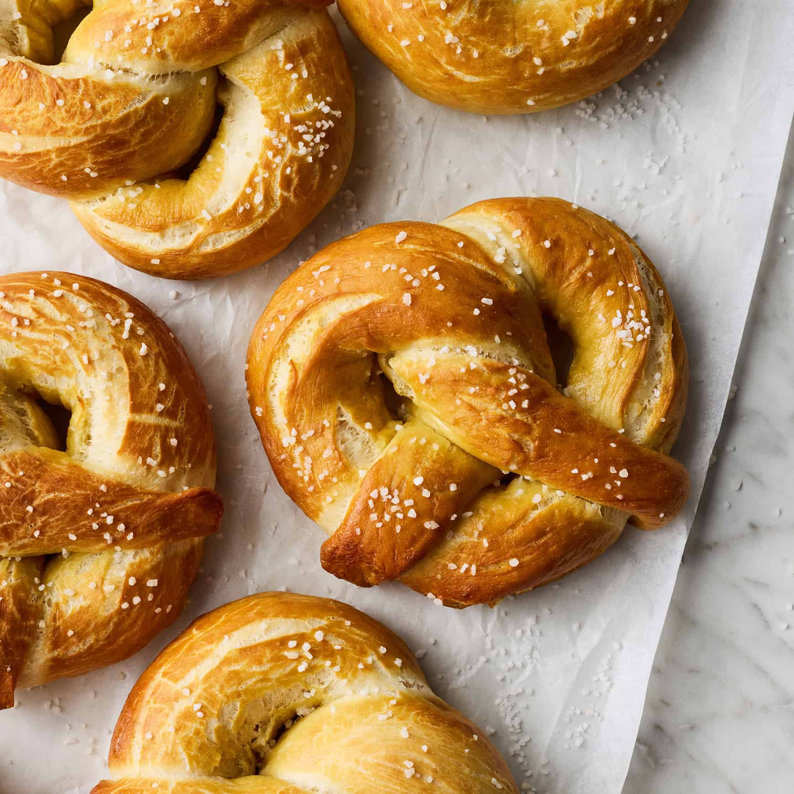

Soft Pretzels
Home

Description
This homemade pretzel recipe is great! After spending so much money on those mall pretzels, I thought I'd try making some myself. They are a bit sweeter than other types and are buttery. Dip the hot pretzel in melted butter and coat with your favorite flavors.
Ingredients
- 4 teaspoons active dry yeast
- 1 teaspoon white sugar
- 1 ¼ cups warm water (110 degrees F/45 degrees C), or more as needed
- 5 cups all-purpose flour
- ½ cup white sugar
- 1 ½ teaspoons salt
- 1 tablespoon vegetable oil, plus more for greasing
- 4 cups hot water
- ½ cup baking soda
- ¼ cup kosher salt, for topping
Steps
- Dissolve yeast and 1 teaspoon sugar in 1 ¼ cups warm water in a medium bowl; let stand until yeast softens and begins to form a creamy foam, about 10 minutes.
- Combine flour, ½ cup sugar, and 1 ½ teaspoons salt in a large bowl; make a well in the center. Add yeast mixture and 1 tablespoon oil to the well; mix well and form into a dough. If mixture is dry, add 1 or 2 more tablespoons water.
- Knead dough until smooth, about 7 minutes. Lightly oil a large bowl; place dough in the oiled bowl and turn to coat. Cover the bowl with plastic wrap; let rise in a warm place until doubled in volume, about 1 hour.
- Preheat the oven to 450 degrees F (230 degrees C). Grease 2 baking sheets.
- Pour 4 cups hot water into a large bowl; stir in baking soda until dissolved. Set aside.
- Turn dough out onto a lightly floured surface; divide into 12 equal pieces. Roll each piece into a rope; twist into a pretzel shape.
- Once all dough is shaped, dip each pretzel into hot water-baking soda solution; place on the prepared baking sheets. Sprinkle with kosher salt.
- Bake in preheated oven until browned, about 8 minutes.
- Enjoy!